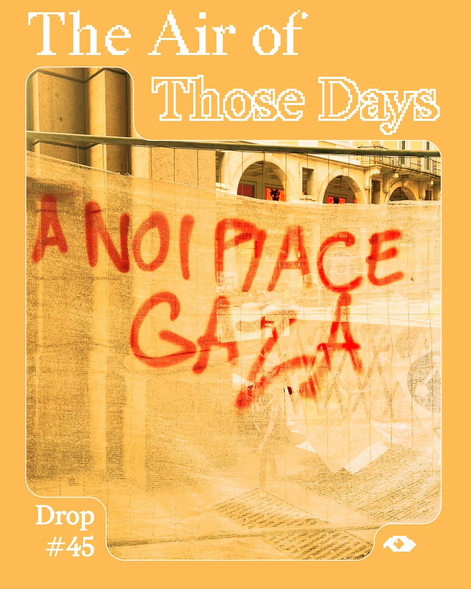
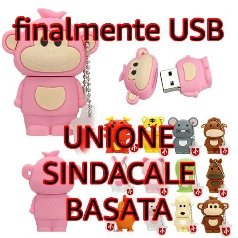
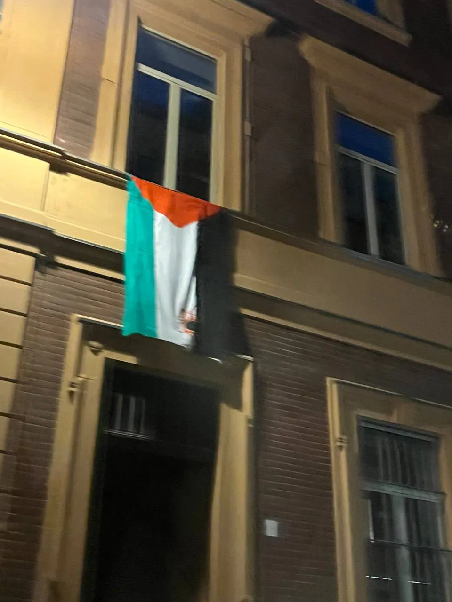

Drop #45 · January 16, 2026 · 5 min read
A sound chronicle of the Italian October Strike
Hey everyone (▰˘◡˘▰),
First of all, happy 2026 and welcome back to Drops, REINCANTAMENTO’s newsletter. Amidst the tumultuous flow of events that marked the beginning of the year, we return with something different: a sound piece. “In The Air of Those Days" chronicles the general strikes in Italy of September–October 2025 in solidarity with G4z4. Moving between the joyful heat of those weeks and the quiet winter that followed, it holds the lost hopes of my, our, generation.
We realized the piece following the invitation of my friend Alizée and their fantastic crew, +++.
It first aired last week at +++’s show Synthetic Tales on 90Mil Radio, an independent Berlin-based station streaming from the iconic underground venue of the same name.
The show describes itself as "for the foggy heads in search of deep sounds and hybrid musics and words to dream about the next night." We hope our contribution can rock some dreams of revolt.
Dedicated to all those detained or persecuted for their activism.
✦ Concept and Writing: Alessandro Y. Longo
✦ Sound Design & Mix: Arianna Longo
✦ Whispers & Shadow Art Direction: Kinked
Tracklist:
Almamegretta – En-sof
Ahnnu – Red05
Asmus Tietchens – Lichthof 10
Anaïs Tuerlinckx – Miroitements Étranges
Stello Giannoulakis – Suvenires
R3D & Shabjdeed & Daboor - Ramadan
You can listen (or read) to the piece below and on Soundcloud.

In The Air of Those Days Transcript
The sequence begins at the port of Genoa. The anti-fascist spirit of this coastal city awakens the country, as it did in 1960 against Tambroni’s government — with the most right-wing republican history until today’s, obviously.
On the last night of August, standing before the Italian section of the global Freedom Flotilla, ready to set sail and break the criminal siege of Gaza, the harbor worker and trade unionist Riccardo Rudino makes a promise to the cheering crowd.
If they touch the Flotilla, we block everything. Blocchiamo tutto.
The message is pragmatic, built on a consequential logic that makes agency contagious. If they do this, we respond with that. Suddenly, unexpectedly, the Italian people awaken. The mobilization grows. On September 22nd, 2025, the grassroots unions declare a general strike.
I watched the situation from abroad. For the first time in my life, Italy really became an example to follow.
Wednesday, October 1st, 2025. It’s 7 p.m. Italian time when the Israeli military stop the Flotilla. Almost 50 boats are intercepted. Dozens of activists are violently arrested.
Our promise must be kept.
By Wednesday evening, protests already fill the cities. This time, by chance, I’m there. Stations, ports, highway junctions: these are again the targets. The circulation of goods and people must be blocked. Stop the infrastructure feeding the genocidal beast.
We move, finally, one step beyond the symbolic.
People don’t want timid solidarity walks. The majority of those in the streets want to finally achieve something, to make an impact, to use their bodies to give flesh to the verb. We traverse the ghost of the hashtag and return to materiality.
This is not the country we know and complain about endlessly, accustomed as we are to our childish, cosmetic Italian pessimism. This doesn’t look like the same country governed by a neo-fascist party, now in power for nearly three years and enjoying stable popular support while the opposition fails to make any impact — corrupt, divided, and exhausted as it is.
Italy is a country trapped in its unresolved history, in the projection of so many father figures: Mussolini, Andreotti, Craxi, Berlusconi, and now Meloni — not a father, but playing the same role. The country with the fewest university graduates in the EU, wages stagnant for 40 years, a bleeding North-South divide with few equals in the world, a country that has pushed out an entire generation, its hinterlands hollowing, its cities surrendered to the most vulgar tourism imaginable.
Through the Flotilla, Italy finalizes Gaza and the immeasurable loss it represents for humanity. From this standpoint, the ethical refusal to be silently complicit in the worst crime of our time, the Italian people stop being resigned. A transformative process is set in motion.

An old quote from Mark Fisher’s blog comes back to me: What if they had a protest and everyone came?
On Friday, October 3rd, 2025, everyone comes.
The streets in Turin fill at 9 a.m. and don’t empty until midnight. The next day, a national rally erupts in Rome, blocking the capital. The desert of neo-fascism — that is to say, the withdrawal from politics and public life — dissolves. At least for now.
It’s been three months now since I wrote these lines. It was a flare, not a fire. Order has returned, with all its anguishing normality.
Normality was the problem, wasn’t it? That’s what we said at the beginning of the decade. The normality of a pandemic, the normality of genocide, the normality of an empire in violent decline, and the normality of a country frozen in its sad chrysalis.
Well, this normality has returned. Is three months enough to feel nostalgic?
I remember a sentence from an article I read a few years ago.
The real opposite of nostalgia is psychedelic, the reverse of remembering is hallucinating…
What if we had kept going in October? Until we stopped Italian support for Israel. Until we brought down the government. Maybe the winter would have felt less cold.
For now, they have won. But they are still afraid.
As for us, this is not time for memories or memorials. We must ignite an organizational fever that will give us back the air of those days of October.
